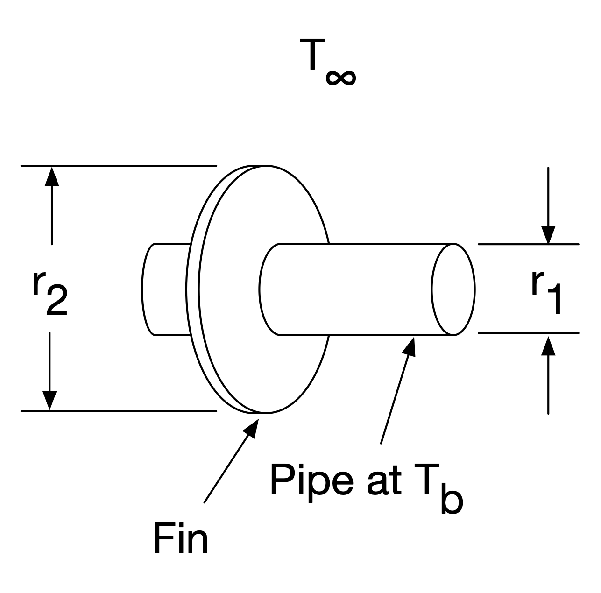

---
redirect_from:
  - "/quizzes/quiz3-bvps"
title: |-
  Sample Quiz 3 problems: BVPs
pagenum: 18
prev_page:
  url: /quizzes/quiz2-IVPs.html
next_page:
  url: /contributing.html
suffix: .md
search: z t r y delta equation frac begin end ri align solution text infty left right x n lambda m ti b guess sin method tn k h problem annular fin dr boundary eigenvalue prime pi finite difference temperature radius dt where given neq quad ldots forward euler leftarrow outer described heat transfer step size figure center ode location differences recursion c condition into solve replace eigenfunction principal gather cos bcs therefore associated shooting value target sample quiz problems bvps distribution inner d rm radial distance centerline independent variable constant depends coefficient thermal conductivity thickness annulus assuming choose spatial img

comment: "***PROGRAMMATICALLY GENERATED, DO NOT EDIT. SEE ORIGINAL FILES IN /content***"
---

    <main class="jupyter-page">
    <div id="page-info"><div id="page-title">Sample Quiz 3 problems: BVPs</div>
</div>
    <div class="jb_cell">

<div class="cell border-box-sizing text_cell rendered"><div class="inner_cell">
<div class="text_cell_render border-box-sizing rendered_html">
<h2 id="Problem-1:-Finite-difference-method">Problem 1: Finite difference method<a class="anchor-link" href="#Problem-1:-Finite-difference-method"> </a></h2><p>The temperature distribution $T(r)$ in an annular fin of inner radius $r_1$ and outer radius $r_2$ is described by the equation
\begin{equation}
r \frac{d^2 T}{dr^2} + \frac{dT}{dr} - rm^2 (T - T_{\infty}) = 0 \;,
\end{equation}
where $r$ is the radial distance from the centerline (the independent
variable) and $m^2$ is a constant that depends on the heat transfer coefficient, thermal conductivity, and thickness of the annulus. Assuming we choose a spatial step size $\Delta r$,</p>
<figure>
  <center>
  
  <figcaption>Figure: Annular fin</figcaption>
  </center>
</figure><p>a.) Write the finite-difference representation of the ODE (that applies at a location $r_i$), using central differences.</p>
<p>b.) Based on the last part, write the recursion formula.</p>
<p>c.) The boundary condition at the outer radius $r = r_2$ is described by convection heat transfer:
\begin{equation}
-k \left. \frac{dT}{dr} \right|_{r=r_2} = h \left[ T(r=r_2) - T_{\infty} \right] \;.
\end{equation}
Write the boundary condition at $r = r_2$ in recursion form (i.e., the equation you would implement into your system of equations to solve for temperature).</p>
<h3 id="Solution">Solution<a class="anchor-link" href="#Solution"> </a></h3><p>a.) Replace the derivatives in the given ODE with finite differences, and replace any locations with the $i$ location:
\begin{equation}
r_i \frac{T_{i-1} - 2T_i + T_{i+1}}{\Delta r^2} + \frac{T_{i+1} - T_{i-1}}{2\Delta r} - r_i m^2 (T_i - T_{\infty}) = 0
\end{equation}
or
\begin{equation}
r_i (T_{i-1} - 2T_i + T_{i+1}) + \frac{\Delta r}{2} (T_{i+1} - T_{i-1}) - r_i m^2 \Delta r^2 (T_i - T_{\infty}) = 0
\end{equation}</p>
<p>b.) Rearrange and combine terms:
\begin{align}
r_i (T_{i-1} - 2T_i + T_{i+1}) + \frac{\Delta r}{2} (T_{i+1} - T_{i-1}) - r_i m^2 \Delta r^2 (T_i - T_{\infty}) &amp;= 0 \\
r_i (T_{i-1} - 2T_i + T_{i+1}) + \frac{\Delta r}{2} (T_{i+1} - T_{i-1}) - r_i m^2 \Delta r^2 T_i &amp;= -r_i m^2 \Delta r^2 T_{\infty} \\
\left(r_i - \frac{\Delta r}{2}\right) T_{i-1} + \left( -2 r_i - r_i m^2 \Delta r^2 \right) T_i + \left( r_i + \frac{\Delta r}{2} \right) T_{i+1} &amp;= -r_i m^2 \Delta r^2 T_{\infty}
\end{align}</p>
<p>c.) We can use a backward difference to approximate the $dT/dr$ term. $T_n$ represents the temperature at node $n$ where $r_n = r_2$:
\begin{align}
-k \frac{T_n - T_{n-1}}{\Delta r} &amp;= h (T_n - T_{\infty}) \\
-k (T_n - T_{n-1}) &amp;= h \Delta r (T_n - T_{\infty}) \\
k T_{n-1} - (k + h\Delta r) T_n &amp;= -h \Delta r T_{\infty}
\end{align}</p>
<h2 id="Problem-2:-eigenvalue">Problem 2: eigenvalue<a class="anchor-link" href="#Problem-2:-eigenvalue"> </a></h2><p>Given the equation $y^{\prime\prime} + 9 \lambda^2 y = 0$ with $y(0) = 0$ and $y(2) = 0$,</p>
<p>a.) Find the expression that gives all eigenvalues ($\lambda$). What is the eigenfunction?</p>
<p>b.) Calculate the principal eigenvalue.</p>
<h3 id="Solution">Solution<a class="anchor-link" href="#Solution"> </a></h3><p>a.)
\begin{gather}
y(x) = A \sin (3 \lambda x) + B \cos (3 \lambda x) \\
\text{Apply BCs: } y(x=0) = 0 = A \sin(0) + B \cos(0) = B \\
\therefore B = 0 \\
y(x) = A \sin (3 \lambda x) \\
y(x=2) = 0 = A \sin (3 \lambda 2) \\
A \neq 0 \text{ so } \sin(3 \lambda 2) = \sin(6 \lambda) = 0 \therefore 6 \lambda = n \pi \quad n=1,2,3,\ldots \\
\lambda = \frac{n \pi}{6} \quad n=1,2,3,\ldots,\infty
\end{gather}</p>
<p>The eigenfunction is then the solution function associated with an eigenvalue:
\begin{equation}
y_n = A_n \sin \left( \frac{n \pi x}{2} \right) \quad n = 1, 2, 3, \ldots, \infty
\end{equation}</p>
<p>b.) The principal eigenvalue is just that associated with $n = 1$:
\begin{equation}
\lambda_p = \lambda_1 = \frac{\pi}{6}
\end{equation}</p>
<h2 id="Problem-3:-shooting-method">Problem 3: shooting method<a class="anchor-link" href="#Problem-3:-shooting-method"> </a></h2><p>Use the shooting method to solve the boundary value problem
\begin{equation}
y^{\prime\prime} - 4y = 0
\end{equation}
where $y(0) = 0$ and $y(1) = 3$. Find the initial value of $y'$ (meaning, $y'(0)$) that satisfies the given boundary conditions. Use the forward Euler method with a step size of $\Delta x = 0.5$.</p>
<h3 id="Solution">Solution<a class="anchor-link" href="#Solution"> </a></h3><p>First decompose into two 1st-order ODEs:
\begin{align}
z_1' &amp;= y' = z_2 \\
z_2' &amp;= y'' = 4 z_1
\end{align}
with BCs $z_1 (x=0) = z_{1,1} = 0$ and $z_1(x=1) = z_{1,3} = 3$, we do not know $y'(0) = z_2(x=0) = z_{2,1} = ?$</p>
<p>Try some guess #1: $y' (0) = 0 = z_2 (0)$, with the forward Euler method:
\begin{align}
z_{1,2} = z_1 (0.5) &amp;= z_1 (0) + z_2(0) 0.5 = 0 \\
z_{2,2} = z_2 (0.5) &amp;= z_2 (0) + \left( 4z_1(0) \right) 0.5 = 0 \\
z_{1,3} = z_1 (1.0) &amp;= z_1 (0.5) + z_2(0.5) 0.5 = 0 \leftarrow \text{solution 1} \\
z_{2,3} = z_2 (1.0) &amp;= z_2 (0.5) + \left( 4z_1(0.5) \right) 0.5 = 0
\end{align}
so for solution 1: $y(1) = 0 \neq 3$.</p>
<p>For guess #2: $y' (0) = 2 = z_2 (0)$, with the forward Euler method:
\begin{align}
z_1 (0.5) &amp;= z_1 (0) + z_2(0) 0.5 = 1.0 \\
z_2 (0.5) &amp;= z_2 (0) + \left( 4z_1(0) \right) 0.5 = 2.0 \\
z_1 (1.0) &amp;= z_1 (0.5) + z_2(0.5) 0.5 = 2.0 \leftarrow \text{solution 2} \\
z_2 (1.0) &amp;= z_2 (0.5) + \left( 4z_1(0.5) \right) 0.5 = 4.0
\end{align}
so for solution 1: $y(1) = 2 \neq 3$.</p>
<p>For guess #3, we can interpolate:
\begin{align}
m &amp;= \frac{\text{guess 1} - \text{guess 2}}{\text{solution 1} - \text{solution 2}} = \frac{0 - 2}{0 - 2} = 1 \\
\text{guess 3} &amp;= \text{guess 2} + m (\text{target} - \text{solution 2}) = 2 + 1(3-2) = 3
\end{align}
then, use this guess:
\begin{align}
z_1 (0.5) &amp;= z_1 (0) + z_2(0) 0.5 = 1.5 \\
z_2 (0.5) &amp;= z_2 (0) + \left( 4z_1(0) \right) 0.5 = 3.0 \\
z_1 (1.0) &amp;= z_1 (0.5) + z_2(0.5) 0.5 = 3.0 \leftarrow \text{solution 3} \\
z_2 (1.0) &amp;= z_2 (0.5) + \left( 4z_1(0.5) \right) 0.5 = 6.0
\end{align}
so for solution 3: $y(1) = 3$ which is the target.</p>
<p>So our answer is $y'(0) = 3$.</p>
<div class="highlight"><pre><span></span>
</pre></div>

</div>
</div>
</div>
</div>

 


    </main>
    